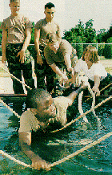
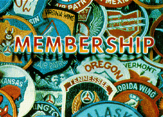
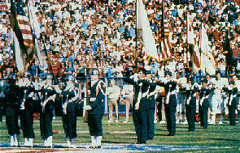

CAP Missions: Cadet Programs
During World War II, CAP trained thousands of young men to fly before they joined the Army Air Forces. This training, coupled with positive values instilled by role models, resulted in the AAF having a pool of aviators virtually ready to do battle.
After the war, the success of the wartime cadet program convinced Congress that a peacetime cadet program would pay great dividends.
For the past half-century, CAP's Cadet Programs have provided young people between 11 and 18 the opportunity to develop their leadership skills through their interest in aviation. For many, it has also offered them the opportunity to learn to fly.
"Your final mission is the cadet program. There, your job is to inspire the country'syouth to become leaders and good citizens through their interest in aerospace. And to me, that is by far, your most important mission."
General Donald J. Kutyna, U.S. Air Force
Commander-in-Chief, Former North American Aerospace Defense Command and U.S. Space Command
A knowledge of aerospace-related information is one of the pillars of the program. Cadets progress at their own pace through a 15-step program including aerospace education, leadership training, physical fitness and moral leadership.
As cadets make progress, they have the opportunity to take part in a wide range of activities including encampments on military bases, orientation flights, and a variety of national and international activities.
Through its National Scholarship Program, CAP provides scholarships to cadets to further their studies in such areas as engineering, science, aircraft mechanics and aerospace medicine. Scholarships leading to solo flight training are also provided.
The U.S. Air Force recognizes the high standards the cadets must meet. When CAP cadets enlist in the Air Force, they now enter as an E-3 (Airman First Class) instead of as an airman basic.
CAP cadets are also well represented at the U.S. Air Force Academy. Usually 8-10 percent of the academy class is composed of former CAP cadets.
[ Back ]